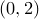

text '<text string>' [at <x>, <y>] [rotate <angle>]
The text command is primarily part of the multiplot environment; it can be used to add blocks of text to a multiplot. It can, however, also be used in single plot mode, in a way that is described below. As always in Pyxplot, the text is rendered using LaTeX. An example would be:
text 'Hello world' at 0,2
which would render the text ‘Hello world’ at position , measured in centimetres. The alignment of the text item with respect to this position can be set using the set texthalign and set textvalign commands.
A rotation angle may optionally be specified after the keyword ‘rotate’ to produce text rotated to any arbitrary angle, measured in degrees counter-clockwise. The following example would produce upward-running text:
text 'Hello' at 1.5, 3.6 rotate 90
Outside of multiplot mode, the text command can be used to produce images consisting simply of one single text item. This can be useful for importing LaTeXed equations as gif images into slideshow programs such as Microsoft Powerpoint which are incapable of producing such neat mathematical notation by themselves.